第五节 Istio 常见的 10 个异常分析
1、Service 端口命名约束
Istio 支持多平台，不过 Istio 和 Kubernetes 的兼容性是最优的，不管是设计理念，核心团队还是社区， 都有一脉相承的意思。
但 Istio 和 Kubernetes的适配并非完全没有冲突，一个典型问题就是 Istio 需要 Kubernetes Service 按照协议进行端口命名（Port Naming）。
端口命名不满足约束而导致的流量异常，是使用 Mesh 过程中最常见的问题，其现象是协议相关的流控规则不生效，这通常可以通过检查该 Port LDS 中 filter 的类型来定位。
1-1 原因
Kubernetes 的网络对应用层是无感知的，Kubernetes 的主要流量转发逻辑发生在 Node 上，由 iptables/IPVS 来实现，这些规则并不关心应用层里是什么协议。
Istio 的核心能力是对 7层流量进行管控，但前提条件是 Istio 必须知道每个受管控的服务是什么协议，Istio 会根据端口协议的不同，下发不同的流控功能（Envoy filter），而 Kubernetes资源定义里并不包括七层协议信息，所以 Istio 需要用户显式提供。
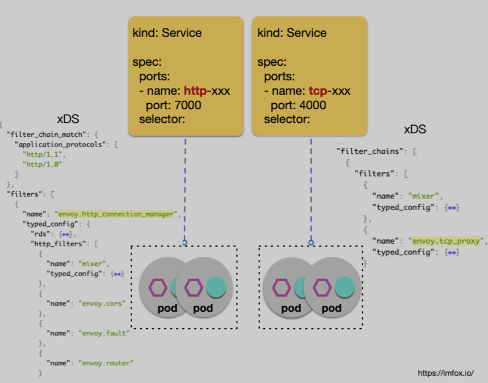
Istio 的解决方案：Protocol Sniffing
协议嗅探概要：
- 检测
TLS CLIENT_HELLO提取 SNI、ALPN、NPN 等信息 - 基于常见协议的已知典型结构，尝试检测应用层
Plaintext内容：- 基于
HTTP2 spec: Connection Preface，判断是否为HTTP/2 - 基于
HTTP header结构，判断是否是HTTP/1.x
- 基于
- 过程中会设置超时控制和检测包大小限制， 默认按照协议
TCP处理
1-2 最佳实践
Protocol Sniffing减少了新手使用 Istio 所需的配置，但是可能会带来不确定的行为。不确定的行为在生产环境中是应该尽量避免的。
一些嗅探失效的例子：
- 客户端和服务端使用着某类非标准的七层协议，客户端和服务端都可以正确解析，但是不能确保 Istio 自动嗅探逻辑认可这类非标准协议。比如对于
HTTP协议，标准的换行分隔是用CRLF （0x0d 0x0a, 但是大部分HTTP类库会使用并认可LF（0x0a）作为分隔。 - 某些自定义私有协议，数据流的起始格式和 HTTP 报文格式类似，但是后续数据流是自定义格式：
- 未开启嗅探时：数据流按照
L4 TCP进行路由，符合用户期望 - 如果开启嗅探：数据流最开始会被认定为
L7 http协议，但是后续数据不符合HTTP格式，流量将被中断
- 未开启嗅探时：数据流按照
建议生产环境不使用协议嗅探，接入 Mesh 的 Service 应该按照约定使用协议前缀进行命名。
2、流控规则下发顺序问题
2-1 异常描述
在批量更新流量规则的过程中，偶尔会出现流量异常（503），Envoy 日志中 RESPONSE_FLAGS 包含「NR」标志（No route configured），持续时间不长，会自动恢复。
2-2 原因分析
当用户使用 kubectl apply -f multiple-virtualservice-destinationrule.yaml 时
这些对象的传播和生效先后顺序是不保证的，所谓最终一致性，比如 VirtualService 中引用了某一个 DestinationRule 定义的子版本，但是这个 DestinationRule 资源的传播和生效可能在时间上落后于该 VirtualService 资源。
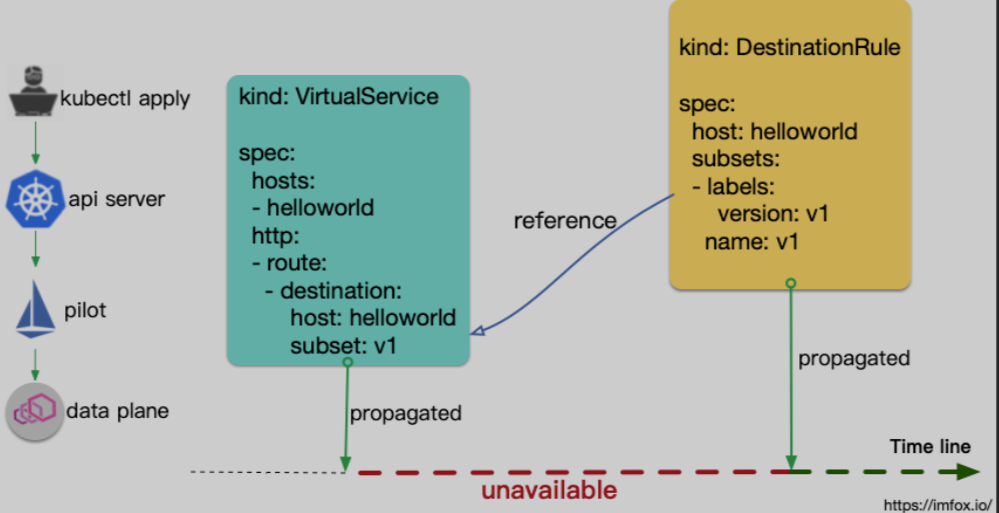
最佳实践：Make Before Break
将更新过程从批量单步拆分为多步骤，确保整个过程中不会引用不存在的 subset：
- 当新增
DestinationRule subset时，应该先apply DestinationRule subset，等待subset生效后，再apply引用了该subset的VirtualService。 - 当删除
DestinationRule subset时，应该先 删除VirtualService中对该subset的引用，等待VirtualService的修改生效后，在执行删除DestinationRule subset。
3. 请求中断分析
请求异常，到底是 Istio 流控规则导致，还是业务应用的返回，流量断点出现在哪个具体的 Pod？
这是使用Mesh 最常见的困境，在微服务中引入 Envoy作为代理后，当流量访问和预期行为不符时，用户很难快速确定问题是出在哪个环节。客户端收到的异常响应，诸如 403、404、503 或者连接中断等，可能是链路中任一 Sidecar 执行流量管控的结果， 但也有可能是来自某个服务的合理逻辑响应。
Envoy 流量模型
Envoy 接受请求流量叫做 Downstream，Envoy 发出请求流量叫做Upstream。在处理 Downstream 和 Upstream 过程中，分别会涉及 2 个流量端点，即请求的发起端和接收端：
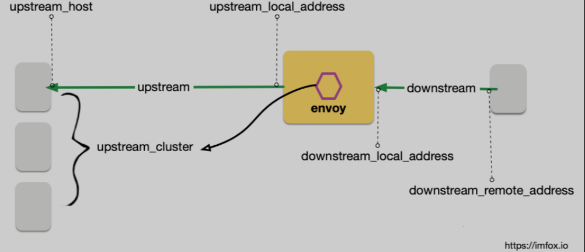
在这个过程中，Envoy 会根据用户规则，计算出符合条件的转发目的主机集合，这个集合叫做 UPSTREAM_CLUSTER，并根据负载均衡规则，从这个集合中选择一个 host 作为流量转发的接收端点，这个 host 就是 UPSTREAM_HOST。
以上就是 Envoy 请求处理的流量五元组信息， 这是 Envoy 日志里最重要的部分，通过这个五元组我们可以准确的观测流量「从哪里来」和「到哪里去」。
UPSTREAM_CLUSTERDOWNSTREAM_REMOTE_ADDRESSDOWNSTREAM_LOCAL_ADDRESSUPSTREAM_LOCAL_ADDRESSUPSTREAM_HOST
日志分析示例
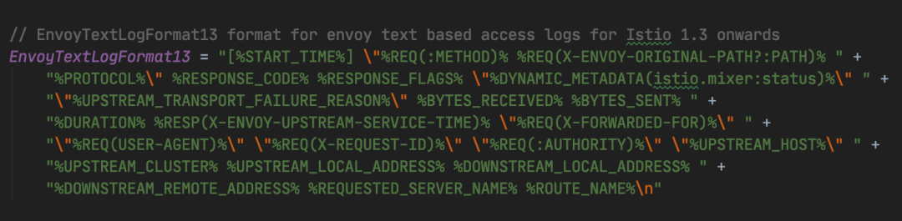
通过日志重点观测 2 个信息：
-
断点是在哪里 ？
-
原因是什么？
示例一：一次正常的 client-server 请求。
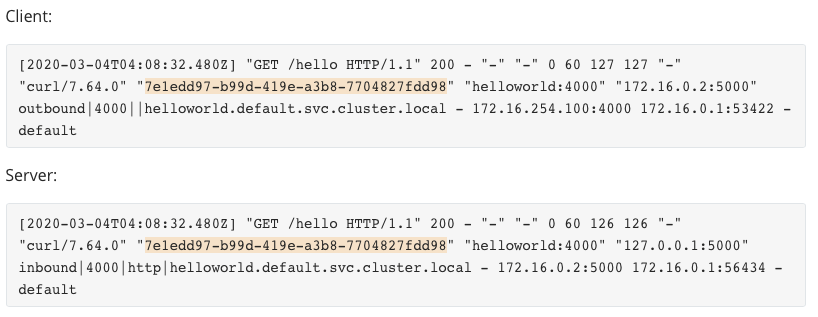
可以看到 2 端日志包含相同的 request ID，因此可以将流量分析串联起来。
示例二：no healthy upstream，比如目标 deployment 健康副本数为 0。
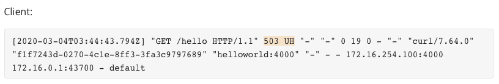
日志中 flag「UH」表示 upstream cluster 中没有健康的host。
示例三：No route configured，比如 DestinationRule 缺乏对应的 subset
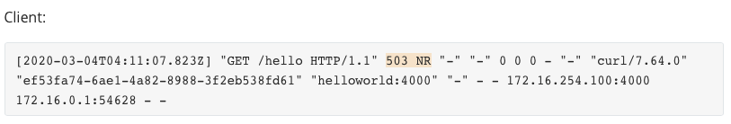
日志中 flag「NR」表示找不到路由。
示例四：Upstream connection failure，比如服务未正常监听端口。
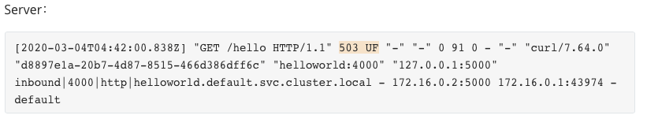
日志中 flag「UF」表示 Upstream连接失败，据此可以判断出流量断点位置。
4、 Sidecar 和 User Container 启动顺序
4-1 异常描述
Sidecar 模式在 Kubernetes 世界很流行，但对目前的 Kubernetes（V1.17）来说，并没有 Sidecar 的概念，Sidecar 容器的角色是用户主观赋予的。
对 Istio用户来说，一个常见的困扰是：Sidecar和用户容器的启动顺序：
Sidecar（Envoy） 和用户容器的启动顺序是不确定的，如果用户容器先启动了，Envoy 还未完成启动，这时候用户容器往外发送请求，请求仍然会被拦截，发往未启动的 Envoy，请求异常。
在 Pod终止阶段，也会有类似的异常，根源仍然是 Sidecar和普通容器的生命周期的不确定性。
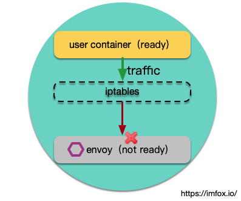
4-2 解决方案
目前常规的规避方案主要是有这样几种：
- 业务容器延迟几秒启动，或者失败重试
- 启动脚本中主动探测
Envoy是否ready，如127.0.0.1:15020/healthz/ready
无论哪种方案都显得很蹩脚，为了彻底解决上述痛点，从 Kubernetes 1.18 版本开始，Kubernetes 内置的 Sidecar 功能将确保 Sidecar 在正常业务流程开始之前就启动并运行，即通过更改 Pod 的启动生命周期，在init 容器完成后启动 Sidecar 容器，在 Sidecar 容器就绪后启动业务容器，从启动流程上保证顺序性。
init 容器 => Sidecar 容器 => 业务容器
而 Pod 终止阶段，只有当所有普通容器都已到达终止状态（Succeeded for restartPolicy=OnFailure 或 Succeeded/Failed for restartPolicy=Never），才会向 Sidecar 容器发送 SIGTERM 信号。
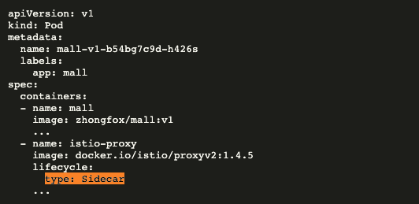
5、 Ingress Gateway 和 Service 端口联动
Ingress Gateway 规则不生效的一个常见原因是：Gateway 的监听端口在对应的 Kubernetes Service 上没有开启，首先我们需要理解 Istio Ingress Gateway 和 Kubernetes Service 的关系：
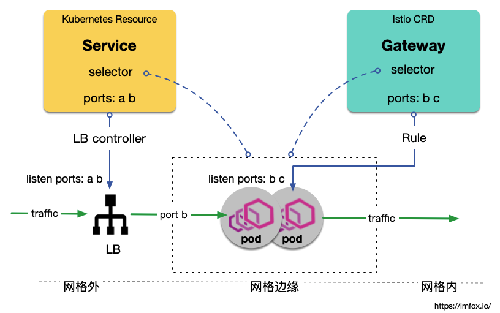
上图中，虽然 Gateway 定义期望管控端口 b 和 c，但是它对应的 Service （通过腾讯云 CLB）只开启了端口 a 和b，因此最终从 LB 端口 b 进来的流量才能被 Istio Gateway管控。
Istio Gateway和Kubernetes Service没有直接的关联，二者都是通过selector去绑定Pod，实现间接关联。Istio CRD Gateway只实现了将用户流控规则下发到网格边缘节点，流量仍需要通过LB控制才能进入网格。- 腾讯云
TKE Mesh实现了Gateway-Service定义中的Port动态联动，让用户聚焦在网格内的配置。
6、 VirtualService 作用域
VirtualService 包含了大部分 outbound端的流量规则，它既可以应用到网格内部数据面代理中， 也可以应用到网格边缘的代理中。
VirtualService 的属性 Gateways 用于指定 VirtualService 的生效范围：
- 如果
VirtualService.gateways为空，则Istio为其赋默认值Mesh，代表生效范围为网格内部 - 如果希望
VirtualService应用到具体边缘网关上，则需要显示为其赋值：gateway-name1，gateway-name2 - 如果希望
VirtualService同时应用到网格内部和边缘网关上，则需要显示地把Mesh值加入VirtualService.gateways，如Mesh，gateway-name1，gateway-name2
一个常见的问题是以上的第三种情况，VirtualService 最开始作用于网关内部，后续要将其规则扩展到边缘网关上，用户往往只会添加具体 Gateway Name，而遗漏 Mesh：
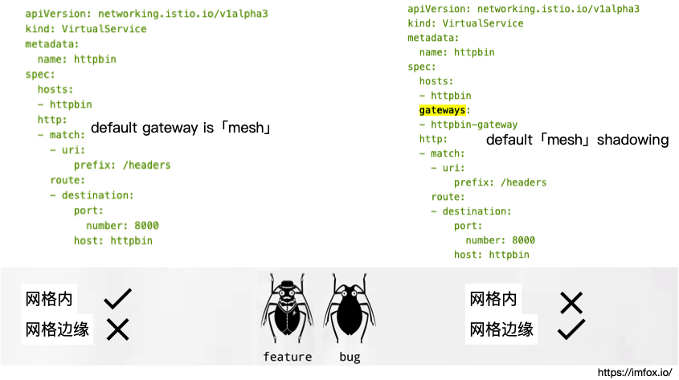
Istio 自动给 VirtualService.gateways设置默认值，本意是为了简化用户的配置，但是往往会导致用户应用不当，一个 feature 一不小心会被用成了bug。
7、 VirtualService 不支持 Host Fragment
7-1 异常案例
对某一host新增、修改 VirtualService，发现规则始终无法生效，排查发现存在其他 VirtualService 也对该 host 应用了其他规则，规则内容可能不冲突，但还是可能出现其中一些规则无法生效的情况。
7-2 背景
VirtualService里的规则，按照host进行聚合- 随着业务的增长，
VirtualService的内容会快速增长，一个host的流控规则，可能会由不同的团队分布维护。如安全规则和业务规则分开，不同业务按照子path分开
目前 Istio 对 cross-resource VirtualService 的支持情况：
- 在网格边缘（
Gateway），同一个host的流控规则，支持分布到多个VirtualService对象中，Istio自动聚合，但依赖定义顺序以及用户自行避免冲突。 - 在网格内部（
for Sidecar），同一个host的流控规则，不支持分布到多个VirtualService对象中，如果同一个host存在多个VirtualService，只有第一个VirtualService生效，且没有冲突检测。
VirtualService 不能很好支持 host 规则分片，使得团队的维护职责不能很好的解耦，配置人员需要知悉目标 host 的所有流控规则，才有信心去修改 VirtualService。
Istio 解决方案：Virtual Service chaining（plan in 1.6）
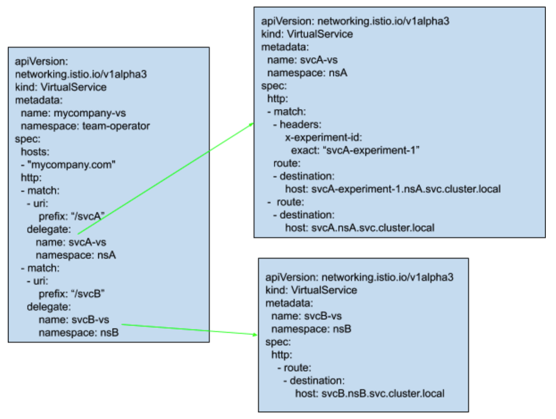
Istio 计划在 1.6 中支持 Virtual Service 代理链：
Virtual Service支持分片定义 + 代理链- 支持团队对同一 host 的
Virtual Service进行灵活分片，比如按照SecOps/Netops/Business特性分离，各团队维护各种独立的Virtual Service
8、全链路跟踪并非完全透明接入
8-1 异常案例
微服务接入 Service Mesh 后，链路跟踪数据没有形成串联。
8-2 原因
Service Mesh遥测系统中，对调用链跟踪的实现，并非完全的零入侵，需要用户业务作出少量的修改才能支持，具体地，在用户发出（HTTP/gRPC）RPC 时， 需要主动将上游请求中存在的 B3 trace headers写入下游 RPC 请求头中，这些 headers 包括：
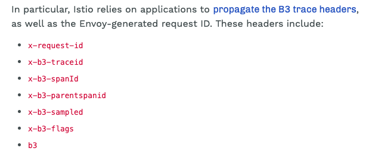
有部分用户难以理解：既然 inbound 流量和 outbound 流量已经完全被拦截到Envoy，Envoy可以实现完全的流量管控和修改，为什么还需要应用显示第传递headers？
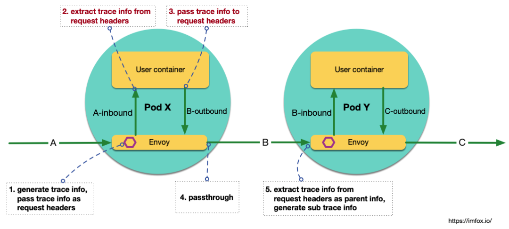
对于 Envoy 来说，inbound请求和 outbound 请求完全是独立的，Envoy 无法感知请求之间的关联。实际上这些请求到底有无上下级关联，完全由应用自己决定。
举一个特殊的业务场景，如果 Pod X 接收到 请求 A，触发的业务逻辑是：每隔10秒 发送一个请求到 Pod Y，如 B1，B2，B3，那么这些扇出的请求Bx（x=1，2，3……），和请求A是什么关系？业务可能有不同的决策：认为A 是Bx 的父请求，或者认为 Bx 是独立的顶层请求。
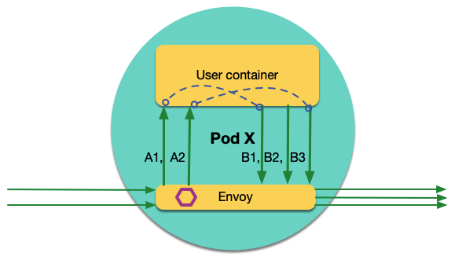
9、 mTLS 导致连接中断
在开启 Istio mTLS 的用户场景中，访问出现 connection termination 是一个高频的异常：
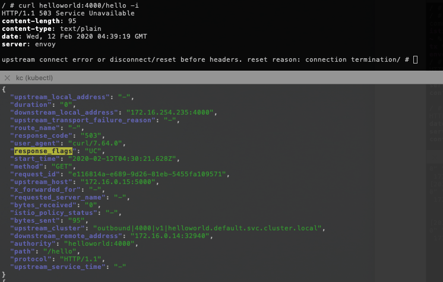
这个异常的原因和 DestinationRule 中的 mTLS 配置有关，是 Istio 中一个不健壮的接口设计。
-
当通过
MeshPolicy开启全局mTLS， 如果网格中没有定义其他的DestinationRule，mTLS正常运行 -
如果后续网格中新增了
DestinationRule，而DestinationRule中可以覆盖子版本的mTLS值（默认是不开启！），用户在使用DestinationRule时，往往很少去关注mTLS属性（留空）。最终导致增DestinationRule后mTLS变成了不开启，导致 connection termination -
为了修复以上问题，用户不得不在所有
DestinationRule中增加mTLS属性并设置为开启
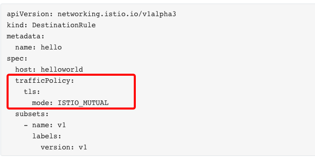
这种 Istio mTLS 用户接口极度不友好，虽然 mTLS 默认做到了全局透明，业务感知不到 mTLS 的存在，但是一旦业务定义了 DestinationRule，DestinationRule 就必须要知道当前 mTLS是否开启，并作出调整。试想 mTLS 配置交由安全团队负责，而业务团队负责各自的 DestinationRule，团队间的耦合会非常严重。
10、 用户服务监听地址限制
10-1 异常描述
如果用户容器中业务进程监听的地址是具体IP（Pod IP），而不是 0.0.0.0，该用户容器无法正常接入 Istio，流量路由失败。
这是又一个挑战 Istio 最大透明化（Maximize Transparency）设计目标 的场景。
10-2 原因分析
Istio-proxy 中的一段iptables：
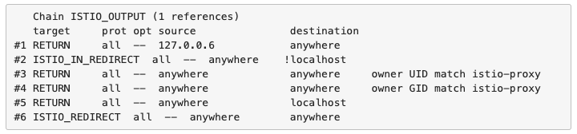
其中，ISTIO_IN_REDIRECT 是 virtualInbound，端口 15006；ISTIO_REDIRECT 是 virtualOutbound，端口 15001。
关键点是规则二：如果 destination 不是 127.0.0.1/32，转给 15006（virtualInbound，Envoy监听），这里导致了对 Pod IP 的流量始终会回到 Envoy。
对该规则的解释：
# Redirect app calls back to itself via Envoy when using the service VIP or endpoint
# address, e.g. appN => Envoy (client) => Envoy (server) => appN.
该规则是希望在这里起作用：假设当前 Pod a属于 service A，Pod 中用户容器通过服务名访问服务A，Envoy 中负载均衡逻辑将这次访问转发到了当前的 Pod IP，Istio 希望这种场景服务端仍然有流量管控能力。如图示：
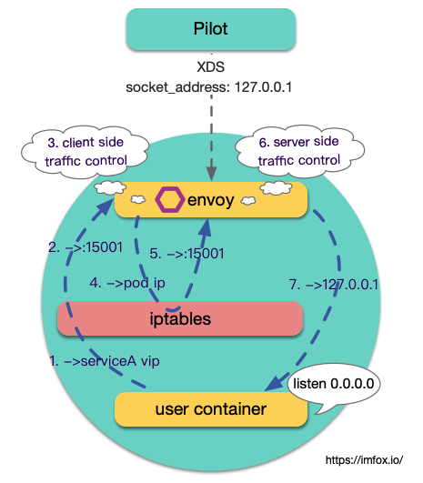
10-3 改造建议
建议应用在接入 Istio 之前，调整服务监听地址，使用 0.0.0.0 而不是具体 IP。